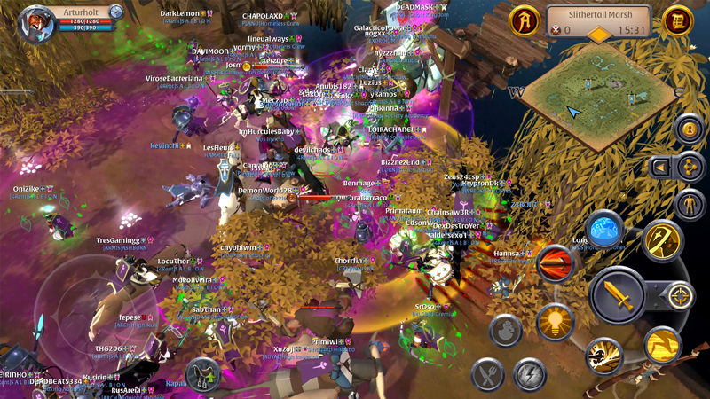
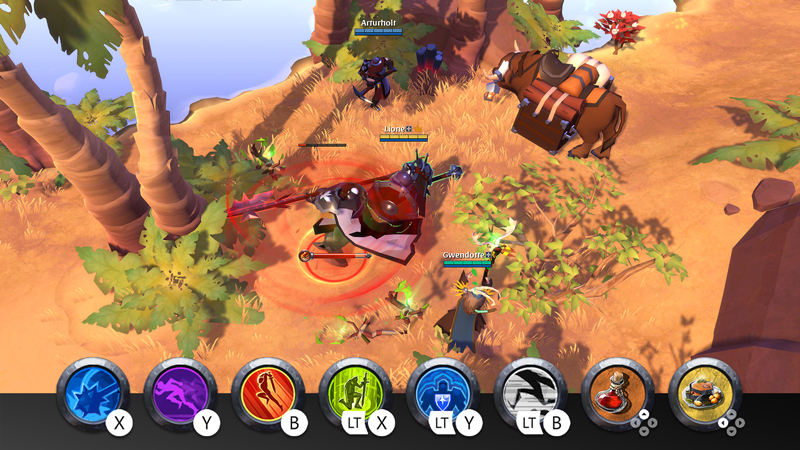

Albion Online es un mmorpg no lineal, en el que escribes tu propia historia sin limitarte a seguir un camino prefijado. Explora un amplio mundo abierto con 5 biomas únicos, todo cuánto hagas tendrá su repercusión en el mundo, con la economía orientada al jugador de Albion, los jugadores crean prácticamente todo el equipo a partir de los recursos que consiguen, el equipo que llevas define quién eres, cambia de arma y armadura para pasar de caballero a mago, o juega como una mezcla de ambas clases. Aventúrate en el mundo abierto frente a los habitantes y las criaturas de Albion, inicia expediciones o adéntrate en mazmorras en las que encontrarás enemigos aún más difíciles, enfréntate a otros jugadores en encuentros en el mundo abierto, lucha por los territorios o por ciudades enteras en batallas tácticas, relájate en tu isla privada, donde podrás construir un hogar, cultivar cosechas y criar animales, únete a un gremio, todo es mejor cuando se trabaja en grupo. Adéntrate ya en el mundo de Albion y escribe tu propia historia.
En Albión se pueden realizar varias actividades, desde las mas simples como recolección de recursos, matar monstruos, creación de objetos, transportes, hasta conquista de territorios, castillos y guerras entre muchos jugadores, en Albion el progreso se mide con la fama que tenga un jugador, la fama no es mas que la experiencia adquirida en el uso de alguna herramienta de recolección, arma, creación de objetos, refinamiento de materiales, creación de comida y pociones, crianza de animales, etc. Albion también cuenta con un sistema de niveles los objetos, monstruos, monturas, mapas son clasificados por un sistema de niveles del 1 que es el nivel más bajo, con casi ningún objeto, hasta el nivel 8 que es el nivel más alto, mientras más fama obtengas podrás usar mejores armas, sembrar las plantas de nivel más alto, ensillar las monturas de mayor nivel, para ganar fama solo basta con realizar la actividad que queremos subir de nivel, si siembro zanahorias subiré mi fama en siembra y no solo en la siembra, también en la especialización de este cultivo, en Albion también existe un nivel de especialización, mientras más especializados estemos en usar una arma específica, tendremos mejores estadísticas en dicha arma, pero si mejoramos la especialización de la familia de dicha arma, por ejemplo mejorar la especialización de todas las espadas, esto nos dará un bono, pero esto supone un reto muy grande que lleva tiempo y mucho esfuerzo. Pero todo esto nos permite tener un mejor poder de objeto promedio, que nos ayuda a saber cuanta fuerza, resistencia y habilidad tiene el equipo que llevamos, en Albion la fama y especialización que tengamos en el uso de un arma es lo que determina nuestra fuerza, por lo que podremos siempre mejorar otras armas pertenecientes a otros roles en el juego y así siempre variar en que equipamiento llevar y poder disfrutar de todos los roles del juego, desde un jugador de soporte conocido como "Support", un sanador conocido como "Healer", un jugador de gran resistencia ideal para resistir los ataques del enemigo y adentrase en sus filas conocidos como "tanques", hasta un jugador enfocado en el daño, ya sea daño a larga distancia o corta distancia, conocidos como "RDPS" en caso de los jugadores de daño a distancia y "Melee" en caso de los jugadores de daño a corta distancia.
En Albion existen varios tipos de mapas divididos en colores, los mapas clasificados como "zonas azules" son mapas en los que el combate entre jugadores no esta permitido, los jugadores hostiles(Pk's, fácilmente reconocidos por que sus nombres nos aparecerán en rojo) no nos podrán atacar, en los mapas clasificados como zonas amarillas los jugadores hostiles nos podrán derribar pero no asesinar, por lo que el combate entre jugadores si esta permitido pero los derribos que no suponen la muerte, después de unos minutos estaremos de pie nuevamente y podremos seguir jugando, las zonas clasificadas como rojas dan inicio a las zonas donde la muerte supone perder todo nuestro botín(loot) y todo nuestro equipo, en estas zonas la cantidad de jugadores hostiles se nos muestra, por lo que siempre podremos saber que cantidad de jugadores suponen una amenaza para nosotros, por último existe todo un continente conocido por varios jugadores como "la zona negra" en la que el combate entre jugadores esta permitido, la muerte supone la pérdida de nuestro equipo y botín, además de que el mapa no nos indica cuantos jugadores nos pueden atacar y suponen una amenaza, puesto que al ingresar en esta zona todos los jugadores son hostiles sin necesidad de cambiar al modo hostil, al atacar a un jugador en las zonas rojas y negras no podremos ingresar a ninguna zona azul o amarilla puesto que entramos en un estado conocido como "fugitivo" el cual dura unos minutos y cuando se termina este estado ya podremos ingresar a zonas segura. En Albion los mapas tienen diferentes niveles desde el nivel 2 hasta el nivel 8, esto influye en la fuerza de los monstruos, el nivel de los recursos que podemos recolectar, el nivel de las mazmorras que se generan naturalmente y el nivel de los peces que podamos pescar, en caso de que exista agua dulce o agua salada. Existen 6 ciudades Martlock, Thetford, Fort Sterling, Lymhurst, Bridgewatch y Caerleon, además de 3 reposos en la zona negra Arthur's Rest, Morgana's Rest y Merlyn's Rest, con las actualizaciones mas recientes estos reposos han crecido en cuanto a servicios que nos ofrecen, por lo que hoy en día se parecen mas a las ciudades del continente real (The Royal Continent)
En Albion existen 5 biomas distintos, las montañas de hielo de Fortsterling en la que podremos recolectar, hierro, piedra y fibra, los bosques de Lymhurst donde podremos recolectar madera, piedra y piel de animales salvajes, los desiertos de Bridgewatch en los que podremos recolectar, piel de animales salvajes, hierro y fibra, los pantanos de Thetford en los que podremos recolectar fibra, piel de animales salvajes y madera y las montañas rocosas de Martlock en las que podremos recolectar piedra, madera y hierro. Además Albion cuenta con los caminos avalonianos, portales a los que los jugadores pueden acceder dependiendo de las cargas que tengan los portales, existen 3 tipos de portales, portales de 2,7 y 20 cargas, para grupos de dos jugadores, grupos medianos de siete o grupos grandes de veinte jugadores, los portales avalonianos no pertenecen a ninguno de los biomas anteriormente mencionados, pero que pueden tener nodos de materias con o sin jefes que nos darán mucho material a la hora de vencerlos y posteriormente recolectarlos, además de monstruos elementales de poca fuerza que podremos vencer y después recolectar HOS: (Hideouts) cada gremio en Albion puede construir un HO en zona negra, lo cual les permite tener una zona segura en la cual habitar sin necesidad de salir de la zona negra, puesto que pueden convertirlo en su hogar y teletransportase desde cada ciudad, reposo, HO o isla en la que se encuentre, siempre y cuando este sea su hogar. Los HOS pueden ser atacados en un horario conocido como horario estelar, el cual depende del mapa en donde estemos, por lo que la elección de un mapa con un horario cómodo para nuestro gremio es primordial para su defensa. Isla personal e Isla gremial: la isla personal puede ser adquirida por cualquier jugador mediante el mercader de isla, que se encuentre exclusivamente en las 6 ciudades del continente Royal, se paga un coste inicial y se puede ir mejorando la capacidad de la isla mediante varios pagos, la isla puede contar con parcelas de construcción y de siembra además de crianza de animales, en las que podremos hacer casas para contratar trabajadores, criar animales de granja, criar animales para convertirlos en monturas, sembrar hiervas y plantas, además de construir edificios para crear objetos (crafteo) crear materiales que nos sirvan para crear objetos (refinamiento), crear edificios dedicados al ensillamiento de animales (guarnecería) y la creación de comidas o pociones (cocina o laboratorio). La isla gremial o isla de gremio es muy parecida con pequeñas diferencias como el tamaño de las casas que podremos construir, ya que en la isla gremial podremos construir casa de gremio las cuales tiene capacidad para mas trabajadores, estas islas cuentan con un baúl central, similar al baúl de las ciudades y HOS, en los cuales podremos almacenar nuestros objetos.
en Albion el mercado es controlado por los jugadores, el mercado nos da la opción de vender nuestros objetos a los demás jugadores(órdenes de venta) y de poner órdenes para comprar objetos (órdenes de compra), por lo que los precios son fijados por los jugadores a excepción de los tesoros de ciudad, objetos que el juego compra de manera directa por un precio fijo, dependiendo del nivel del tesoro y en que ciudad se venda. El mercado negro: este mercado es un mercado exclusivo de Caerleon, el mercado negro solo tiene órdenes de compra generadas por el propio juego, que varían dependiendo del tiempo, se dice que lo que los jugadores venden a este mercado se transforma en las recompensas de los cofres de las dungeons y el mundo abierto.
entre los jugadores de Albion se sabe que existen 3 grandes tipos de monturas, las monturas rápidas que son monturas veloces y que por lo regular no cargan peso, montura de carga, monturas lentas pero que cargan una gran cantidad de peso y las monturas de batalla, las cuales tienen habilidades para el combate y son usadas en las peleas más importantes de Albion, es por eso que el precio de muchas de estas monturas es tan elevado por su gran utilidad, las demás monturas de Albion cuentan con características de los anteriores grupos mencionados, por lo que son híbridos entre algunos de estos grupos
En el mundo abierto encontraremos entradas a calabozos(dungeons) de diferentes tipos, los calabozos verdes están hechas para ser completadas por 1 jugador (suponiendo que tengan el poder medio de objeto y el equipamiento adecuado), todas disponen de 1 a 5 pisos y un jefe al final de esta, los calabozos azules generan otras entradas más grandes, estos son calabozos de mayor dificultad, ideado para ser completadas por 3 a 5 jugadores (al nivel adecuado), por último el máximo reto PVE que nos ofrece Albion son las dungeons avalonianas, las cuales cuentan siempre con 2 pisos y el mismo jefe final, se deben llevar 20 personas y el equipamiento adecuado, además de comidas y pociones que nos ayudaran a hacer la dungeons mas rápido, las mecánicas de los monstruos y jefes siempre se repiten, la dificultad esta en el nivel de los monstruos y jefes. también nos podremos encontrar con portales avalonianos que contengan cofres avalonianos con monstruos de niveles 4,6 y 8, los cuales nos pueden dar grandes recompensas, existen 3 tipos de cofres, verdes ideales para un solo jugador, azules ideales para grupos pequeños de 3-7 jugadores y cofres dorados, ideales para 7 o más jugadores, dependiendo del nivel del cofre puesto que son muy parecidos a las dungeons avalonianas. Mazmorras estáticas: las mazmorras estáticas o simplemente conocidas como estáticas, son dungeons para grupos medianos que buscan ganar mucha fama en poco tiempo, cuentan con mucho espacio por lo que básicamente son dungeons a gran escala, llenas de monstruos, jefes y cofres, en las mazmorras estáticas se debe prestar mucha atención a los roles, equipamiento y composición de nuestro equipo, puesto que no solo nos encontraremos con monstruos, también podemos encontrarnos con otro grupo de jugadores, así que es de suma importancia el equipamiento que llevemos, la concentración y disciplina del grupo, puesto que estas mazmorras dan mucha fama a los jugadores, por lo que se intenta matar la mayor cantidad de monstruos posibles en el menor tiempo posible, para aprovechar al máximo el tiempo que le dediquemos a esta actividad HCE ("hardcore expedition" por sus siglas en inglés) estas expediciones requieren un nivel mayor de concentración, poder medio de objeto y experiencia, puesto que tiene un tiempo limitado para ser completadas, para realizar una de estas expediciones debemos comprar un mapa, conseguir a 4 amigos que cumplan con los roles y equipamiento ideal y entregarle el mapa al maestro de las expediciones, encontraremos uno en cada ciudad del continente Royal, en cada reposo de zona negra y en HOS de nivel 3(escondites de gremio "Hideouts" por su nombre en inglés)
entre los mapas de Albion existen dos tipos de mapas en los que el combate entre jugadores esta permitidos y al matar a otro jugador obtendremos todo el equipamiento y cosas que lleve en su inventario(si no se rompen), ya sea para robarles o para evitar que estos roben tu botín, también hay unas calabozos enfocados en el combate entre jugadores conocidos como mazmorras corruptas y "hellgates", las mazmorras corruptas son para un solo jugador ,se generan de manera natural, existen 3 nivele de mazmorras corruptas, cazador, acechador y homicida, las mazmorras de cazador no suponen la muerte y perdida de loot puesto que solo son accesibles en zonas azules y amarillas, al perder el combate contra otro jugador en la mazmorra corrupta no morimos como tal, solo somos expulsados de la mazmorra. Las hellgates son parecidas pero enfocadas en 2 o más jugadores, son accesibles de dos maneras, al comprar un mapa o encontrar una entrada de manera natural luego de eliminar a un enemigo, las hellgates menores son para 4 jugadores (2vs2) y ahí estos deben eliminar unos jefes y al otro equipo para conseguir el botín. Las medias son para 10 jugadores (5vs5) y funcionan igual que las menores, excepto que estas tienen mejores recompensas y son más difíciles. Las mayores (que saldrán al aire pronto) serán para 20 jugadores (10vs10), cabe destacar que existen dos tipos letales y no letales.
La liga de cristal en una serie de combates programados a lo largo del día, en las que podremos pelear junto con nuestros compañeros en combates letales o no letales, dependiendo del nivel de la batalla, el cual es determinado por una ficha (token) que podremos comprar con el manipulador de energía, disponibles en todas las ciudades del continente Royal, reposos de zona negra y HOS de nivel 2 en adelante, la liga de cristal supone grandes recompensar para los jugadores, puesto que no solo nos dan libros (tomos de conocimiento) que suponen un aumento de nuestra experiencia(fama) y por consiguiente de nuestras estadísticas, también se nos dan bolsas de monedas que contienen moneda del juego rápidamente canjeable, la liga de cristal nos da puntos de temporada, los cuales ayudan a nuestro gremio a sumar puntos para llegar a las mejores clasificaciones de la temporada.
Albion cuenta con un sistema de temporadas, los mejores gremios compiten en una clasificación que los premia con monturas especiales y ser inmortalizados como ganadores de una temporada de uno de los juegos online más importantes del mundo como lo es Albion online, para sumar puntos de temporadas tenemos que ser parte de un gremio y realizar diversas actividades que ayudaran a nuestro gremio a sumar puntos en menor o mayor cantidad, dependiendo de los puntos que tengamos en una temporada nuestro HO podrá entrar en un estado invulnerable y de tal forma no podrá ser atacado por ningún otro gremio, actividades como, la recolección de recursos, PVE, liga de cristal, ayudaran a nuestro gremio en su objetivo de mejorar en la clasificación de la correspondiente temporada, las temporadas duran 3 meses y en casos raros algunas temporadas cortas duran 1 mes y medio.